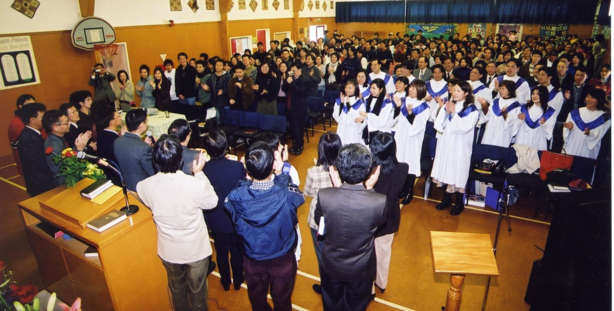
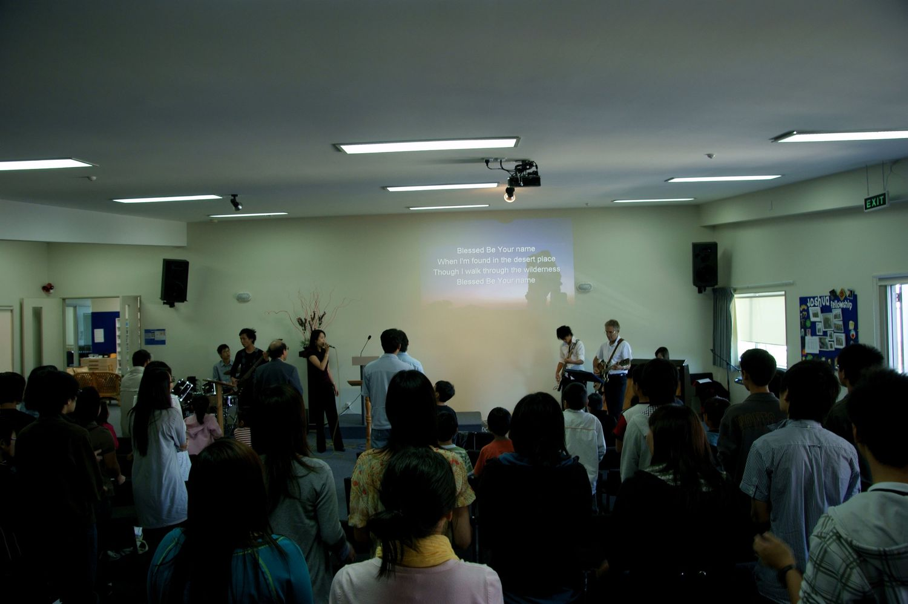
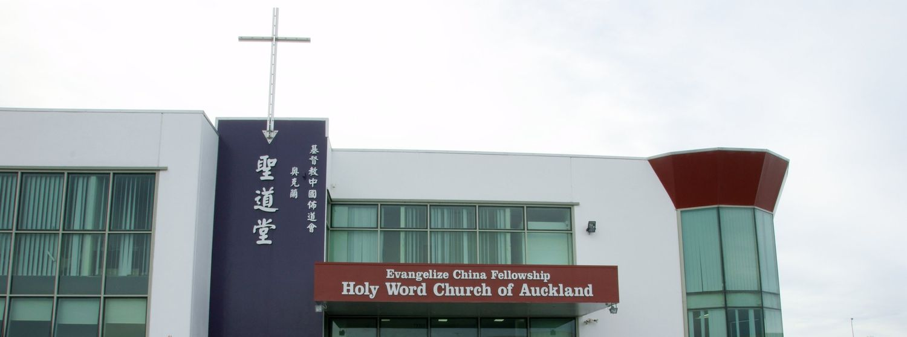

首頁 / 關於
關於我們
基督教中國佈道會奧克蘭聖道堂簡介 基督教奧克蘭聖道堂屬於中國佈道會宗派。中國佈道會由計志文牧師於1947年在上海 創立，事工發展包括開辦教會、神學院、孤兒院和出版社，分佈於香港、澳門、台灣 、美國、印尼、馬來西亞、泰國和新西蘭。
在神的恩典帶領，萬廣祥牧師和一些同工成立本教會，並於1994年5月22在萬牧師家中 舉行第一次主日崇拜。同年7月，租用Wakaaranga小學進行主日崇拜，團契和查經聚會 仍繼續在萬牧師家中進行。
透過神的恩手，教會事工得以發展，得救人數也增加了。堂委會決定購買會址，以應 付長遠的發展，並議決於1994年9月11日成立建堂基金，展開自置物業的第一步。本會 於1996年2月首次購入位於19 Gwenand Place, Highland Park的物業，作為教會的辦 公用途。隨後於1998年3月出售此物業，所得款項用以購入10 Dana Place, Howick物 業作為教會用途。這棟物業於2005年10月出售，隨即購買了2 Basalt Place, East Tamaki現在的物業，提供主日崇拜和日常教會聚會之用。裝修完畢後，本會立刻遷入 ，並於2006年7月16日在現時會址舉行首次主日崇拜。
在神的恩典下，教會人數得以增長，並發展華語事工，於2002年3月3日舉行首次華語 崇拜。
由於語言需要，本會於2007年4月1日開始英語主日崇拜。
從2003年8月開始，本教會由堂委會改為執事會管理架構，同時以部門制度推行各項事 工。中國佈道會是一個強調傳福音和宣教的宗派，因此，聖道堂一直著重推動主耶穌 所吩咐的大使命。由於傳道需要基於神的愛和對人的愛，本會透過教導和訓練，使會 眾培育按聖經教導的真愛，成為真正的門徒。
基於清晰的異象和承擔，我們竭力在各聚會和活動中達成這些目標。在傳道和宣教方 面，教會每年舉行宣教月活動，為宣教事工禱告、街頭外展、逐家探訪、三福出隊、 訪宣、支持宣教士及成立宣教基金。在互相服事方面，我們舉辦退修營、定期團契聚 會、愛筵以實踐主要耶穌的彼此相愛命令。我們以主日學為主要的教導和訓練模式， 並設有定期查經班和各種培訓。
中國佈道會奧克蘭聖道堂正式成立
22 May 1994
首次主日崇拜假創會牧師萬廣祥牧師府上舉行。
一週年堂慶感恩崇拜
21 May 1995
教會於1995年1月1日開始，租用Wakaaranga Primary School作主日崇拜之用。
開辦聖道中文學校 (1996-2000)
2 Feb 1996
星期日下午租借Pakuranga Intermediate School教授中國語文。
購置10 Gwenand Place為會址
1 Oct 1996

購置10 Dana Place為會址
8 Mar 1998

首次舉辦短宣隊到紐國北島南部城市
22 Dec 1998
聖道堂曾多次差派短宣隊到北島、南太平洋及亞洲等地方。
五週年堂慶感恩崇拜
30 May 1999

差派本會第一對宣教士夫婦
2001年7月15日馮慶權及葉秀靈宣教士夫婦差遣禮。
2005年6月12日陳偉明及羅玉華宣教士夫婦差遣禮。
2014年6月29日車展偉宣教士差遣禮。

華語崇拜成立
23 May 2004
華語堂崇拜假10 Dana Place舉行

十週年堂慶聯合感恩崇拜
23 May 2004
新會址2 Basalt Place正式啟用，並舉行第一次崇拜
16 Jul 2006
建堂工程 (2005-2006)

英語崇拜成立
1 April 2007
英語堂崇拜於二樓小禮堂舉行

十五週年堂慶聯合感恩崇拜
24 May 2009

二十週年堂慶暨獻堂禮感恩崇拜
25 May 2015
獻堂禮